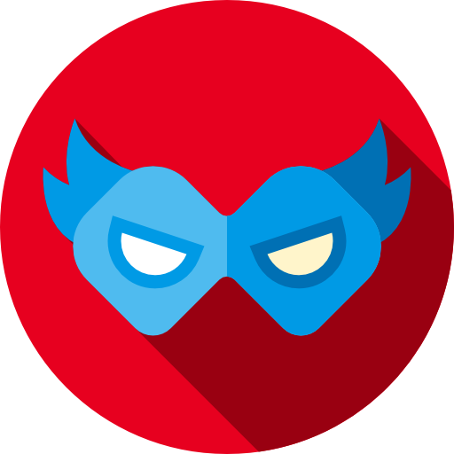

Comics · Self-hosted · Android
DangerRoom
Your comic collection and reading journal. Search Metron, track the covers you own, keep a Want List, and log what you read.
Android beta
β-019 · 0.1.0-beta.19 · Android 9 or newer, on phones and tablets.
The app starts with a centered outlined mask with a diagonal shadow on a matching red background, then opens Want List, My Collection, Search Metron, Scan Comic, Cover Slideshow, and Reading Log. Connect it to your own HTTPS DangerRoom instance using an administrator-issued device ID and secret. Installing the APK does not grant access.
Camera lookup reads text and full comic barcodes, including the five-digit supplement (with nearby printed-digit recognition when its bars are blurred), on your device, then compares candidate Metron covers, including variants. Confirm the issue and artwork before saving; results are an assisted shortlist. The slideshow uses all owned covers except server-saved black bags, with shuffled playback, timing, cross-fades, and automatic full screen. Toggle the black-bag icon in the Android My Collection listing to add or remove a black bag.
Get started
- Run a DangerRoom β-008 or later server, or ask your instance administrator for access.
- Install the APK, then enter the instance hostname and the device credentials issued for your phone or tablet.
- Tap Save and test connection. For future updates, install the signed APK over the existing app.